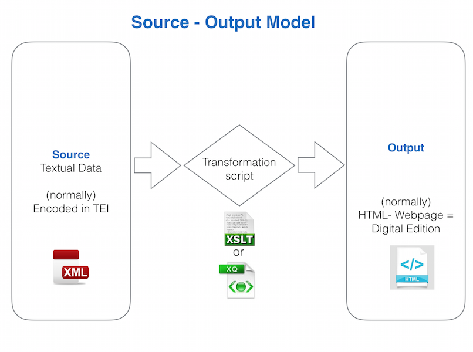

Text Rewired:
Editing the Past in the Digital Way
By Susanna Allés Torrent / @sallesto / Columbia University
Follow the presentation at: http://dh-laic.com/susanna/Text-Rewired/
A showcase prototype: http://susannalles.github.io/Vitae/
Plan of the talk
- The dawn of a project:
- Historical Context
- Types & Proceudres in DSE
- Traditional system goes digital
- Wiring the text with a sustainable practice
1. The Dawn of a project
1.1. Historical Context
|
1.1. Historical Context (2)
Textual Tradition:
- The Italian-Latin Text: Plutarchus, Vitae illustrium virorum
- First published: J. A. Campanus (ed.), Uldaricus Gallus (Ulrich Han), Roma ca. 1470 (editio princeps)
- Reprint: Adolf Rusch, Strasburg ca. 1471
- Edition used by the translator: Nicolaus Jenson, Venice 1478
- Spanish Translation:
- Ed. Cuatro compañeros alemanes, Sevilla 1491
Format of the Print Edition (2015)
Format of the Print Edition (2015)
1.2. Types & Procedures in DSE
Text, Editing, and the Digital
- The centrality of the text in Humanities
- Text as Data
- Good Health of Textual Scholarship
and Digital Scholarly Editions
1.2. Types & Procedures in DSE
First of all, what is a Digital Scholarly Edition (DSE)?
- Digital source + Digital Outcome (ex. Online Publication)
- Digitized Editions vs Digital Edition
- DSE as a "much-larger-scale text archive" (MLA 2015)
“ A digital edition can not be printed without a loss of information and/or functionality. The digital edition is guided by a different paradigm. ”
P. Sahle 2008
Example: a digital Edition that "cannot be printed without a loss of information and/or functionality"
Editorial models
- Social Editions
- Crowdsourcing Editions
- Phylogenetic
- Paradigmatic Editions (Pierazzo 2014)
Social Editions
Use of Wikibooks, Twitter, blogs, social media spaces:
Crowdsourcing Editions
Users contribute with new content:
Phylogenetic
Application of philogenetic algorithms to group familly witnesses
Paradigmatic editions
Documentary |
Digital Critical Editions |
- Based on a Source-Output Model
- The Editor is the encoder
Source-Output Model
- Extensible Markup Language + TEI
Digital workflow
- Data Modelling (conceptual / formal model)
- Transcription and Encoding
- Publishing
- Digital Editing Infrastructure
1.3. The traditional system goes digital
- Recensio
- Fontes criticae
- Collatio Codicum
- Examinatio and Selectio
- Constitutio stemmatis
- Constitutio Textus
- Examinatio and Selectio
- Emendatio
- Dispositio Textus
- Apparatus Criticus
- Proofreading
- [Publication]
For each step a digital practice
| Steps | Process | Sample tools |
|---|---|---|
| 1. Recensio | ||
| Fontes criticae | Gathering, management,description (metadata) for manuscripts | Online Databases |
| Collatio Codicum | Algorithmic collation of witnesses | CollateX, Juxta 1 |
| Constitutio Stemmatis | Digital Stemmatology (phylogenetic & cladistic algorithms) | |
| 2. Constitutio textus | ||
| Examinatio & Selectio | Text Encoding | Tex Encoding Initiative |
| Emendatio | Text Encoding | Tex Encoding Initiative |
| Dispositio Textus | Design of the Web Interface | |
| Apparatus Criticus | ? | ? |
| Proofreading | ? | ? |
| 3. Publication | ? | Boilerplate, Version Machine2, TAPAS |
Last stages of publication
2. Rewiring the text with a digital practice
2. Rewiring the text with a digital practice
- The must have:
- Minimal, standard, and low cost technologies (e.g. plain text, XML, HTML)
- Scalability (e.g. GitHub)
- Reuse (e.g. front-end framework; Jekyll site generator layout 1, layout 2) and reproducibility
- Collaboration
- Open SourceCode in GitHub